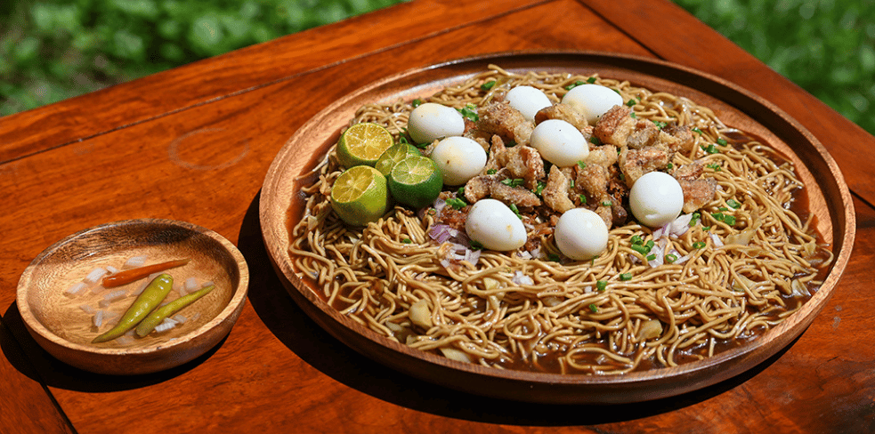
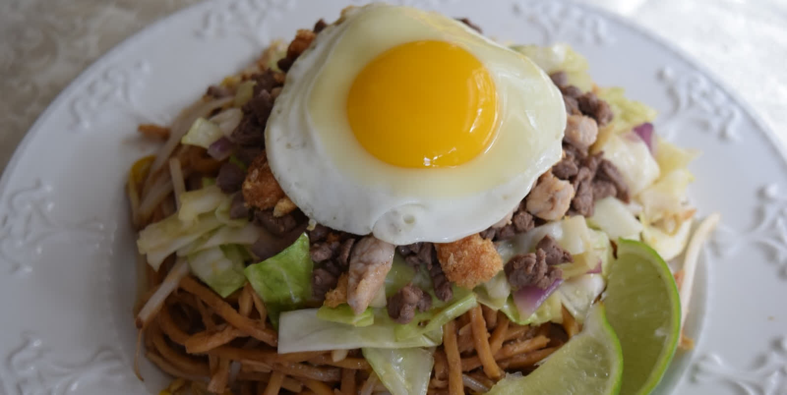
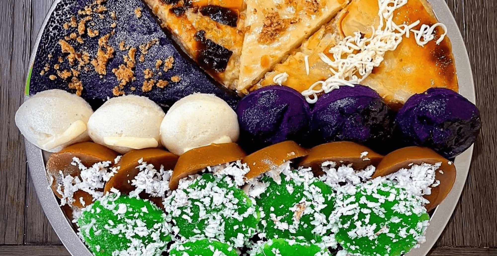
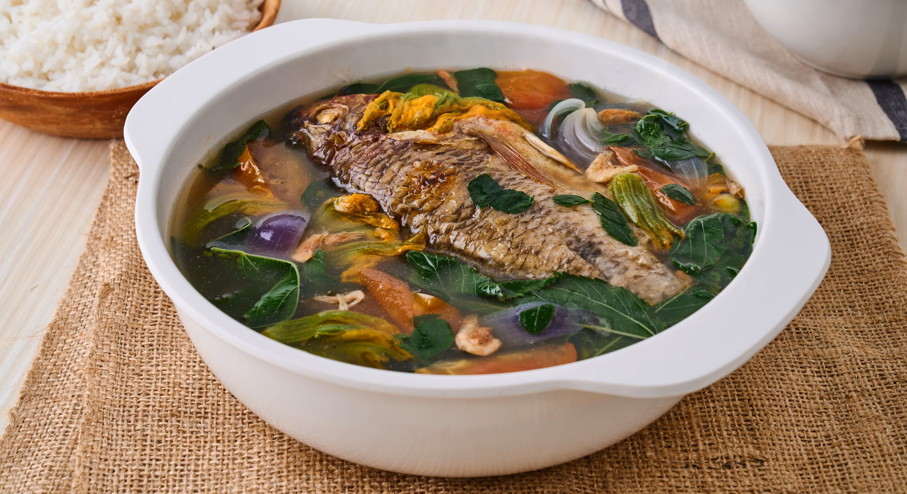
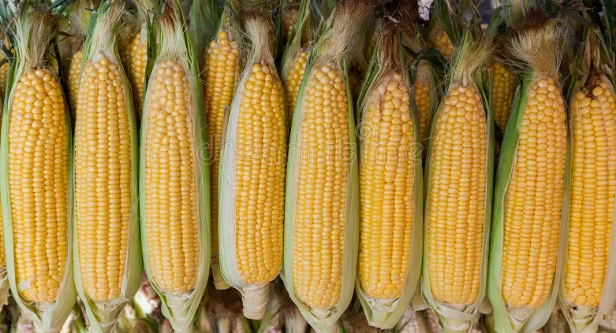

Local Flavors
Taste the authentic flavors of Isabela — a blend of Ibanag, Ilocano, and Gaddang culinary traditions.

A unique noodle dish from the municipality of Cabagan, this version of pancit uses thick rice noodles topped with a savory broth of pork, shrimp, vegetables, and a special blend of local seasonings. Unlike other pancit varieties, Pancit Cabagan has a distinct orange-tinted broth and is served with calamansi and chili vinegar.
Where to try: Cabagan town center restaurants and local eateries; available at Bambanti Festival food fair

Considered the pride of Tuguegarao (Cagayan) and enjoyed throughout the Cagayan Valley including Isabela, Batil Patung is a hearty noodle dish made of egg noodles topped with sautéed carabao meat or pork, fresh egg, and spring onions, served in a rich savory broth. A filling and flavorful meal beloved by locals.
Where to try: Local carinderias in Santiago City, Ilagan City, and Cauayan City

Isabela's versions of traditional Filipino rice cakes are beloved local delicacies. Biko is made with glutinous rice cooked in coconut milk and topped with caramelized coconut (latik). Puto Isabela uses locally grown rice and is known for its extra-soft texture and subtle sweetness. These are sold at markets and festivals throughout the province.
Where to try: Public markets in Ilagan City, Cauayan, and local bakeries throughout Isabela

Inabraw is the Ibanag version of the classic Filipino Pinakbet. It features an assortment of local vegetables — ampalaya (bitter melon), okra, eggplant, string beans — cooked with fermented fish sauce (bagoong) and pork. The Ibanag version uses a more sour and pungent bagoong, giving it a distinct flavor compared to Ilocano or Tagalog versions.
Where to try: Traditional Ibanag households and local restaurants in Ilagan City and Cabagan

As one of the Philippines' top corn-producing provinces, Isabela takes pride in its corn-based treats. Binubudan (fermented corn wine), corn ice cream, corn polvoron, and fresh corn on the cob grilled with special local seasonings are widely enjoyed. These reflect the province's agricultural identity and the ingenuity of its people.
Where to try: Bambanti Festival agri-fair, roadside stalls along national highways, and local pasalubong centers
Isabela's version of longganisa (local sausage) is known for its garlicky, slightly sweet, and savory flavor. Made from ground pork seasoned with garlic, vinegar, and local spices, Longganisa Isabela is a breakfast staple. Each municipality may have its own variation, with some preferring a spicier or smokier flavor profile.
Where to try: Public markets in Santiago City, Cauayan City; pasalubong shops along the highway